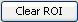
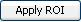

-
Defining ROIs manually
 is on top of the image. Clicking on the radio button specifies one of the three required ROIs. The default ROI is Whole Cell Area.
is on top of the image. Clicking on the radio button specifies one of the three required ROIs. The default ROI is Whole Cell Area.Draw ROI area - Once the paintbrush button
 is pressed, the paint mode will be on until another button is selected. When you drag the mouse over the image in the paint mode, the area the mouse has passed will be highlighted and saved as the specified ROI. The files open with brush as the default selection.
is pressed, the paint mode will be on until another button is selected. When you drag the mouse over the image in the paint mode, the area the mouse has passed will be highlighted and saved as the specified ROI. The files open with brush as the default selection.Erase ROI area - Select the erase mode by clicking on erase button . Dragging the mouse over
a painted area will erase the part that the mouse has passed.
 . If users click the mouse again in a closed area, the area will be automatically filled.
. If users click the mouse again in a closed area, the area will be automatically filled.
Clear ROI - Clicking on the clear ROI button  will clear the highlighted area for the specific ROI.
-
Defining ROIs automatically
Import ROI mask - Clicking on the import ROI mask button will pop up an open file dialog. Users can select an image file to be imported as the specified ROI.
ROI assistant tool - Clicking on the ROI assistant button will pop up an ROI creation dialog. Figure 3-4 shows the dialog. Users need to select ROI threshold source and spatial
enhance threshold. Users also can play on the slider bar to shrink ROI or grow ROI. The FRAP image will be changed simultaneously when users are tuning the thresholds. Once the automatically generated ROI
is accepted, users can click on the resolve button to have the image resolved. Users then need to click on apply ROI button  to make the ROI applied.